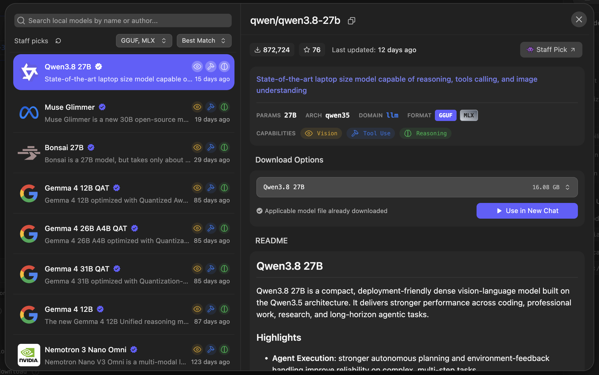
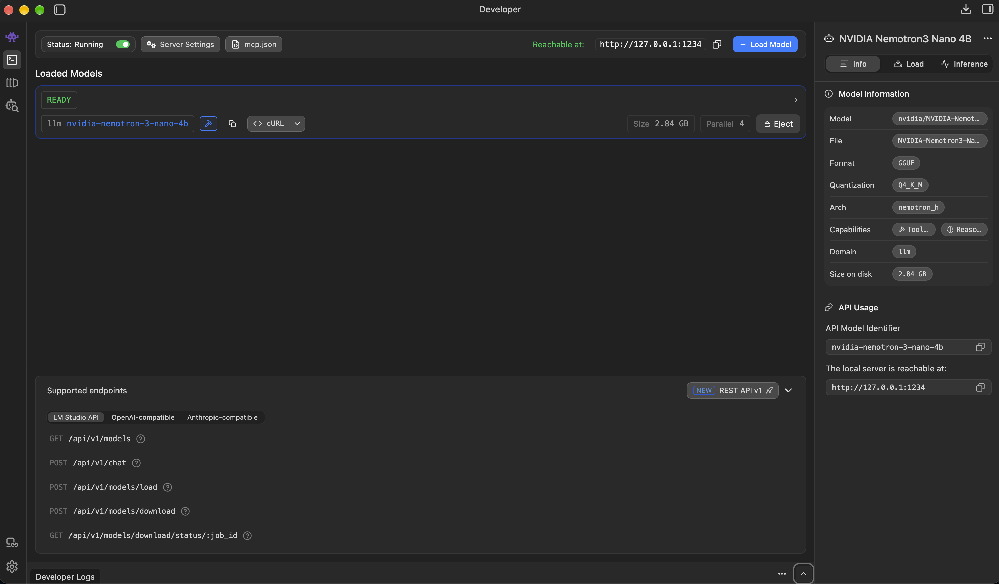

Model + C#GatherModel fills a filter; C# validates, clamps and narrows 1,000 approved local records.
ModelExtractPick the record IDs that answer the question.
C#ValidateReject unknown IDs, duplicates and low confidence.
ModelAnalyseSummarise the validated records: finding, actions and open questions.
Local models · LM Studio
Find a model

Local models · LM Studio
Your models
Local models · LM Studio
Serve it on localhost:1234

Local models · LM Studio
Or from the terminal
lmsget nvidia/nemotron-3-nano-4b # downloadlmsload nvidia-nemotron-3-nano-4b -c 16384 # load, 16k contextlmsps# inspect what is loadedlmsserver start# http://localhost:1234/v1
$ lms load nvidia-nemotron-3-nano-4b -c 16384
Model loaded successfully in 1.08s. (2.64 GiB)
API / SDK identifier: "nvidia-nemotron-3-nano-4b"
$ lms ps
IDENTIFIER STATUS SIZE CONTEXT DEVICEnvidia-nemotron-3-nano-4b IDLE 2.84 GB 16384 Local$ lms server start
Success! Server is now running on port 1234
Local models · Ollama
Or use Ollama
Same OpenAI-compatible endpoint shape, served on localhost:11434/v1.
ollamapull nemotron-3-nano:4b # download onceollamarun nemotron-3-nano:4b # opens a chat; first run loads itollamaps# inspect what is loaded
$ ollama pull nemotron-3-nano:4b
pulling manifest
success$ ollama run nemotron-3-nano:4b "Say hello in five words"
Hello from your local model.$ ollama ps
NAME SIZE PROCESSOR CONTEXTnemotron-3-nano:4b 2.8 GB 100% GPU 16384
Local models
Which model, and why.
ModelSizeExtract + AnalyseNote
Nemotron 3 Nano 4BNVIDIA2.8 GB~5 stonight's model; verify with ready
Gemma 4 26B-A4BGoogle15.6 GB~5 sas fast, needs ~16 GB free
Qwen 3.8 27BAlibaba16 GB~20 scorrect, slow
LFM2.5 1.2BLiquid AI1.25 GB~2 sfastest; findings read like instructions
Measured end to end on one M4 Max with LM Studio; your hardware will differ.
Bigger isn't always better for a focused task.The code stays the same when you swap.
Get started
Get the repo
Scan the code to get started.
Or type thisgithub.com/jernejk/ small-models-sharp-jobs
workshop/01…06One lab at a timeEach snapshot has one focused TODO. Finish it, then open the next folder.
Later numbered labRecovery pathFall behind? Pair up, then open the matching later lab. The facilitator-only reference stays off the attendee path.
Every command tonight runs from the repo root; --project workshop/0X-… picks the lab. Labs 01 and 02 are one Program.cs each; data and gates arrive from lab 03.
Get started
Point it at your model
Two settings, stored with dotnet user-secrets so nothing lands in git.
# LM Studiodotnetuser-secrets set MAF_ENDPOINT http://localhost:1234/v1 --project workshop/01-getting-started
dotnetuser-secrets set MAF_MODEL nvidia-nemotron-3-nano-4b --project workshop/01-getting-started
# Ollamadotnetuser-secrets set MAF_ENDPOINT http://localhost:11434/v1 --project workshop/01-getting-started
dotnetuser-secrets set MAF_MODEL nemotron-3-nano:4b --project workshop/01-getting-started
All six labs share one UserSecretsId, so you set this once and every lab sees it. MAF_API_KEY only when your server wants one. Shell variables beat secrets, secrets beat appsettings.json.
Get started
Your first call
var client = new OpenAIClient(
new ApiKeyCredential(settings.ApiKey),
new OpenAIClientOptions { Endpoint = new Uri(settings.Endpoint) })
.GetChatClient(settings.Model)
.AsIChatClient();
AIAgent agent = client.AsAIAgent(
instructions: "Reply with exactly the token you are given.",
name: "HelloAgent");
var response = await agent.RunAsync("Reply with exactly this token: WORKSHOP_OK");
Console.WriteLine(response.Text); // WORKSHOP_OK
Local servers don't check the key; settings.ApiKey is a placeholder like lm-studio unless you point at a hosted endpoint.
Get started
One client, any provider
OpenAIClientAny OpenAI-compatible serverLM Studio, Ollama, OpenAI, Azure OpenAI, OpenRouter — the endpoint and key change, the code does not.
AsAIAgentChat client → agentInstructions and a name turn a raw chat client into something you can run.
RunAsyncOne requestText goes in, text comes back. Typed output next.
Get started
Run it
dotnetrun--project workshop/01-getting-started
local hello | LOCAL | endpoint=http://localhost:1234/v1 | model=nvidia-nemotron-3-nano-4b
WORKSHOP_OK
The first line tells you which endpoint and model actually answered.
No reply? Run lms ps or ollama ps.
Usually the model is not loaded, or the port does not match your secrets.
Talking to a model
Structured output
record SimpleCommand(string Action, string Target);
var typed = await typedAgent.RunAsync<SimpleCommand>("Mute the microphone.");
Console.WriteLine("raw: " + typed.Text);
SimpleCommand command = typed.Result;
Source: Artificial Analysis — None · Low · Medium · XHigh · accessed 31 Aug 2026. Dollar estimate is output tokens × Alibaba’s listed $3/M output price; excludes input, cache and provider variation. Hosted API data, not local runtime cost.
Talking to a model
Choose reasoning effort
ChatOptions = new ChatOptions
{
Temperature = 0,
MaxOutputTokens = 700,
Reasoning = new ReasoningOptions
{
Effort = ReasoningEffort.None,
Output = ReasoningOutput.None
}
}
NoneResponsive chatAnswer directly when you want a quick conversational response.
LowSimple focused workUse a little thought for bounded tasks with a clear goal.
HigherHarder problemsSpend more only when the task is open-ended enough to justify it.
The dataset and Gather
Meet the dataset
1,000 records2012–2025, non-fatalCurated from public Victoria Road Crash Data (CC BY 4.0).
RemovedFatal and pedestrian crashesRoad names, coordinates, time of day, person and vehicle tables.
KeptSix fieldsid · date · title · summary · severity · sourceReference
The model fills a typed filter: date range, term and cap. C# validates and clamps it to 1–20, then narrows this one approved local corpus.
The dataset and Gather
One record
{
"id": "T20140024624",
"date": "2014-11-27",
"title": "Road crash record: cross traffic at an intersection",
"summary": "Historic non-fatal Victorian road-crash record in Wellington, Gippsland. Crash type: collision
with vehicle; category: cross traffic at an intersection; reported severity: other injury
accident; vehicles recorded: 2.",
"severity": "Other injury accident",
"sourceReference": "Victoria Road Crash Data: T20140024624"
}
The dataset and Gather · Model + C#
Parse, then gather
if (from is not null && to is not null && from > to) (from, to) = (to, from);
return new CrashQuery(from, to, term, filter?.MaxResults is > 0 and var cap ? Math.Clamp(cap, 1, 20) : 8);
records
.Where(r => filter.From is null || r.Date >= filter.From)
.Where(r => filter.To is null || r.Date <= filter.To)
.Where(r => filter.Term is null || Matches(r, filter.Term))
.OrderByDescending(r => r.Date)
.ThenBy(r => r.Id, StringComparer.Ordinal)
.Take(filter.MaxResults)
.ToList();
Both halves of Utilities.cs: ValidateFilter swaps a reversed range and clamps the cap to 1–20, then Gather runs deterministic LINQ over the approved corpus. No agent touches this file.
The dataset and Gather · Model + C#
Model fills the filter
var agent = GatherAgent.Create(client);
var response = await agent.RunAsync<QueryFilter>(prompt);
var filter = Utilities.ValidateFilter(response.Result);
var evidence = Utilities.Gather(records, filter);
The model returns a typed QueryFilter. C# validates it, then filters the one approved local corpus.
The dataset and Gather · workshop/03-gather/GatherAgent.cs
The GatherAgent
public static AIAgent Create(IChatClient client) => client.AsAIAgent(new ChatClientAgentOptions
{
Name = "GatherAgent",
ChatOptions = new ChatOptions
{
Temperature = 0,
MaxOutputTokens = 700,
Reasoning = new ReasoningOptions { Effort = ReasoningEffort.None, Output = ReasoningOutput.None },
Instructions = """
Turn the prompt into a date range, term and result cap.
The records are Victorian road crashes from 2012 to 2025.
Dates are yyyy-MM-dd. Leave from and to empty unless the prompt names a year or a range.
Term is one or two words naming the topic, or empty if the prompt names none.
Return only the typed contract. You have no tools.
"""
}
});
The whole agent: a name, the call options, and instructions that describe the contract's fields — never the corpus. Reasoning off is not a style choice: without it the local model streams its thinking into the reply and the typed parse fails, on about 40% of Ollama runs.
The dataset and Gather
Run it
dotnetrun--project workshop/03-gather -- "Show up to 5 intersection crashes from 2012."
model filter: { … "term": "intersection crash", "maxResults": 5 }
validated filter: { "from": "2012-01-01", "to": "2012-12-31", "term": "intersection", "maxResults": 5 }
gathered: 5 record(s)
MODEL asked for "intersection crash". C# validation cut it to "intersection".
dotnetrun--project workshop/03-gather -- "Find cyclist crashes."
validated filter: { "from": null, "to": null, "term": "cyclist", "maxResults": 8 }
gathered: 0 record(s)# a correct answer, not a failure
Extract and Analyse · TODO 4
Extract: in and out
Prompt · textQuestion + evidence pack
Question: What patterns…
Evidence pack JSON:
[ {…}, {…} ]
Contract · C#The type you ask for
record CrashSelection(
string[] RecordIds,
string Rationale,
int Confidence);
The model picks IDs, a rationale and a confidence. It doesn't enforce the rules — the next slide does.
Extract and Analyse · CP-04 · workshop/04-extract/Program.cs
Extract: the code
var extract = await ExtractAgent.Create(client).RunAsync<CrashSelection>(
ExtractAgent.Prompt(prompt, evidence));
selection = Gates.TryTyped(extract);
public static string Prompt(string question, IReadOnlyList<CrashRecord> evidence) =>
$"Question: {question}\nEvidence pack JSON:\n{Utilities.ToJson(evidence)}";
public static T? TryTyped<T>(AgentResponse<T> response) where T : class
{
try { return response.Result; }
catch (Exception ex) when (ex is InvalidOperationException or JsonException) { return null; }
}
Two lines to write. The prompt carries evidence, never records — Extract cannot see the corpus. TryTyped turns malformed JSON into null, which the gate reports as UnsupportedSelection instead of a crash.
Extract and Analyse · code you already have
Validate the selection
GatherExtractValidateAnalyse
var gate = Gates.ValidateSelection(evidence, selection, out var selected);
if (gate is CrashGate.Supported) // CP-05 goes here, and nowhere else
{
…
}
RejectedUnknown, duplicate or blank IDsOversized or null selections, a blank rationale, confidence outside 0–100.
LowConfidenceUnder 60Valid shape, but the model clearly isn't sure — stop before Analyse.
We control the flowNot the modelPlain old C# decides if we even make the next call.
Extract and Analyse · checkpoint
After TODO 4
dotnetrun--project workshop/04-extract -- "Show up to 5 intersection crashes from 2012."
corpus: 1000 record(s)
gathered: 5 record(s)
extract gate: Supported
selected: [ { "id": "T20120004385", … }, … ]
Every ID came back out of the pack the code looked up itself. Analyse arrives in lab 05 — run -- "Find cyclist crashes." and the gate is NoEvidence, because Extract is never called at all.
Extract and Analyse · TODO 5
Analyse: in and out
Prompt · textQuestion + validated records only
Question: What patterns…
Validated selected records JSON:
[ {…}, {…} ]
Contract · C#The type you ask for
record CrashAnalysis(
string Finding,
string[] Actions,
string[] Questions,
int Confidence);
Put "0–100 confidence" in the instruction. Otherwise the model may return 0, and the gate stops it.
Extract and Analyse · CP-05 · workshop/05-analyse/Program.cs
Analyse: the code
var analyse = await AnalyseAgent.Create(client).RunAsync<CrashAnalysis>(
AnalyseAgent.Prompt(prompt, selected));
analysis = Gates.TryTyped(analyse);
Instructions = """
Analyse only the records you are given. Return a grounded finding, practical actions,
open questions, and a confidence between 0 and 100.
Do not claim a cause the records do not state. Do not mention records you were not given.
Return only the typed contract. You have no tools.
"""
Same two lines as Extract, against selected — not the pack, not the corpus. The instruction has to ask for the 0–100 confidence, or the model fills in a field nobody told it about.
Extract and Analyse
Run it
dotnetrun--project workshop/05-analyse -- "Show up to 5 intersection crashes from 2012."
gathered: 5 record(s)
extract gate: Supported
analyse gate: Supported
analysis: {
"finding": "…non-fatal collisions at intersections…All incidents are categorized as 'other injury accident'…",
"actions": [ … ], "questions": [ … ], "confidence": 95
}
Extract and Analyse
Read the answer
Supported meansThe gate said yesThe IDs exist, the JSON parsed, confidence is in range. That's all it checked.
Valid shape ≠ correct factsThe gate checks JSON and IDs, not contentThat bold sentence is wrong: T20200020837 is a Serious injury accident.
SoRead the findingTyped output and a passing gate get you a candidate answer. Someone still has to read it.
Workflows and graceful failure
Gates are flow control
GateWhat happens
NoEvidenceGather found nothing, so Extract and Analyse never run.
UnsupportedSelectionBad IDs or shape from Extract. The run stops before Analyse.
LowConfidenceValid shape, confidence under 60. The run stops, with the reason on screen.
UnsupportedAnalysisAnalyse returned nothing usable. Caution branch.
SupportedShow the finding — with the evidence still on screen.
call failedEndpoint down, model not loaded, timeout. You see the real error, not a stack trace.
Predictable failure: the app stops and tells you why.
Workflows and graceful failure · workshop/05-analyse/Program.cs
The flow, in plain C#
var evidence = Utilities.Gather(records, Utilities.ValidateFilter(query.Result));
if (evidence.Count == 0)
{
Console.WriteLine("no evidence found: Extract and Analyse are never called.");
}
else
{
var gate = Gates.ValidateSelection(evidence, selection, out var selected);
if (gate is CrashGate.Supported)
{
var analysis = Gates.TryTyped(analyse);
Console.WriteLine($"analyse gate: {Gates.ValidateAnalysis(selected, analysis)}");
}
}
Easy to read and step through — and every gate is an ifyou have to remember to write.
Workflows and graceful failure · Microsoft.Agents.AI.Workflows
As a MAF Workflow
var workflow = new WorkflowBuilder(gather)
.AddEdge<CrashRun>(gather, report, run => run is { Gate: not null })
.AddEdge<CrashRun>(gather, extract, run => run is { Gate: null })
.AddEdge<CrashRun>(extract, report, run => run is { Gate: not null })
.AddEdge<CrashRun>(extract, analyse, run => run is { Gate: null })
.AddEdge(analyse, report)
.WithOutputFrom(report)
.Build();
await using var run = await InProcessExecution.RunAsync(workflow, prompt);
Four executors, and CrashRun travels the edges — a non-null Gate means stop and report. There is no edge from gather to analyse, so skipping Extract is not a path and you cannot forget its gate. "Find cyclist crashes." prints invoked: gather then invoked: report: Extract and Analyse are never constructed.
Workflows and graceful failure · workshop/06-workflow/Executors.cs
Now open one node
internal sealed class ExtractExecutor(IChatClient client, string prompt)
: Executor<CrashRun, CrashRun>("extract")
{
private readonly AIAgent _agent = Agents.Create(client, "ExtractAgent", """
Pick the records from the evidence pack that answer the question.
Copy recordIds exactly as they appear in the pack. Never invent an id.
""");
public override async ValueTask<CrashRun> HandleAsync(
CrashRun run, IWorkflowContext context, CancellationToken cancellationToken = default)
{
var extract = await _agent.RunAsync<CrashSelection>(
$"Question: {prompt}\nEvidence pack JSON:\n{Utilities.ToJson(run.Evidence)}", cancellationToken: cancellationToken);
var selection = Gates.TryTyped(extract);
var gate = Gates.ValidateSelection(run.Evidence, selection, out var selected);
return run with { Selection = selection, Selected = selected, Gate = gate is CrashGate.Supported ? null : gate };
}
}
Same three linesLab 05's code, movedThe instructions, the prompt it sends and the gate it applies were in three places. Now they are in one.
The signature is the contractExecutor<CrashRun, CrashRun>In and out are declared, so a step only wires to something whose types line up.
The if is goneThe graph decidesSet Gate and routing does the rest. You stop writing control flow and start declaring it.
Workflows and graceful failure · the shape those edges build
The graph
Every arrow is one AddEdge. The pipeline reads left to right; the two red paths are the gates. Nothing crosses from gather to analyse — there is no such arrow to draw.
Workflows and graceful failure
Workflow or plain code?
WorkflowTyped executors joined by edgesConditions on edges, an event per step, checkpoints. But RunAsync does not throw — check WorkflowErrorEvent or a dead endpoint gives you no output and exit 0.
Plain C#The same sequence you can step throughLabs 03–05, and lab 06 is that sequence as a graph — same output, same gates.
Use a workflow whenThe shape has to be unrepresentableFan-out, resuming, or a step you must not be able to skip. Don't bother for two calls in a straight line.
Key takeaways
Small models, sharp jobs.
Give the model one narrow task over data you already filtered.
Ask for typed output so you can validate IDs, ranges and required fields in C#.
Missing data, bad output and low confidence are ordinary branches you handle in code.
Valid JSON doesn't mean it's right, so read the finding.
Same IChatClient, any model: swap the endpoint and rerun ready. We measured seven.
Join the conversation@SSW_TV · @jernej_kavka · #GlobalAIConstruct
Thank you
Questions?
Which job in your system is small enough for a 4B model — and what would the gate be?
Slides, checkpoints and the saved reference run
Talking to a model
Three ways to call a model
1 · ChatText in, text outYour code has to interpret the answer.
await agent.RunAsync("…");
2 · Tool callThe model asks code to run a functionOnly registered C# can run. The result goes back to the model.
var tool =
AIFunctionFactory
.Create(Gather);
tools: [tool]
3 · Structured outputJSON shaped like a C# typeCode parses it, then validates it.
await agent.RunAsync<CrashSelection>("…");
Tonight's lab uses 1 and 3. You will see why 2 stays on the slide.
Talking to a model
Tool calls
[Description("Search the approved crash sample.")]
static IReadOnlyList<CrashRecord> Gather(string term, int max)
=> Utilities.Gather(records, new CrashQuery(null, null, term, max));
AIAgent agent = chat.AsAIAgent(
instructions: "Use only the Gather tool. Never guess records.",
name: "GatherAgent",
tools: [AIFunctionFactory.Create(Gather)]);
var response = await agent.RunAsync("Find crashes involving an intersection.");
ModelPicks the functionName and arguments, from the description and signature.
FrameworkRuns the C#Hands the result back; the model continues.
TonightNo tools on the 4BTool + JSON did not call the tool. Tonight: typed filter → C# Gather.
Presenter extra
Fixed workflow vs coding-agent harness
A workflow is code you wrote, in an order you chose. A harness (Codex, Claude Code, OpenCode) is a loop the model drives — planning, session state, compaction, approvals, recovery, knowing when to stop. Write one by hand and you're building all of that yourself. Use a harness when the problem is open-ended enough to be worth it.
Presenter extra
MCP exposes tools; code sets policy.
MCP hands the model tools. It doesn't decide when to stop or what to trust — your code does. If the model should never see raw evidence, don't hand it raw evidence.
Extra · Same app, seven models
Same app. Seven models.
ModelSizeRuns /9MedianNote
Nemotron 3 Nano 4B2.8 GB9/94.9 sattendee lane
Gemma 4 26B-A4B QAT15.6 GB9/94.7 sas fast as 4B, needs 16 GB
Gemma 4 12B6.8 GB5/99.6 struncated JSON 4/9; after the gate fix, re-run 3/3